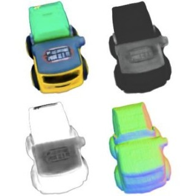

|
Greetings! I am currently a fourth-year student at Zhejiang University studying statistics, data science track. During my undergraduate explorations, I have worked on statistical inference, statistical learning and its various applications. I was advised by Prof. Peng Zhang, Prof. Weilin Xiao, Prof. , and Dr. Weidong Wu. I interned as a quant analyst and a data scientist at Xquant and DolphinDB, working on multi-factor model, data analysis and database management. |

|
|
I'm interested in computer vision, machine learning, optimization, and image processing. Much of my research is about inferring the physical world (shape, motion, color, light, etc) from images. Representative papers are highlighted. |


|
Bing Wang, Fangyuan Li, Lvwan Wang 中国毕业后医学教育, expected 2023 NeRF lets us synthesize novel orthographic views that work well with pixel-wise algorithms for robotic manipulation. |

|
Ben Poole, Ajay Jain, Jonathan T. Barron, Ben Mildenhall arXiv, 2022 project page / arXiv / gallery We optimize a NeRF from scratch using a pretrained text-to-image diffusion model to do text-to-3D generative modeling. |
|

|
Mark Boss, Andreas Engelhardt, Abhishek Kar, Yuanzhen Li, Deqing Sun, Jonathan T. Barron, Hendrik P. A. Lensch, Varun Jampani NeurIPS, 2022 project page / video / arXiv A joint optimization framework for estimating shape, BRDF, camera pose, and illumination from in-the-wild image collections. |
|
|
|
Feel free to steal this website's source
code,
just add a link back to my website.
Do not scrape the HTML from the deployed instance of this website at
http://jonbarron.info,
as it includes analytics tags that you do not want on your own website — use the github code
instead.
If you'd like your new page linked to from here, submit a pull request adding yourself.
|